Three stages. One program.
BUSEL is a student-led space science program that begins in the stratosphere and aims for interplanetary space.
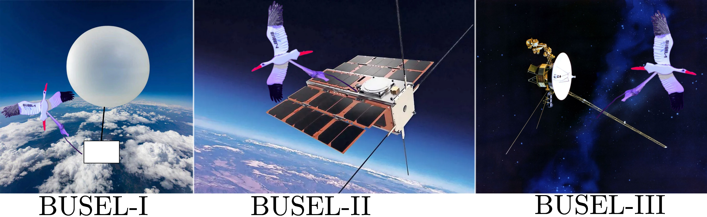
The idea
Earlier this year I submitted a paper in The Astrophysical Journal[1] developing a statistical framework for recovering three-dimensional magnetic turbulence properties from projected polarization maps. The math works on any system where polarized light encodes information about the medium it passed through. The atmosphere is one such system: sunlight scatters off air molecules, becoming linearly polarized by the same Rayleigh process that makes the sky blue. At ground level, the degree of polarization reaches about 70%. At 28 km, where most of the atmosphere is below you, the polarization should approach the single-scattering Rayleigh limit of 94%[2].
No student or amateur balloon has ever measured this transition with research-grade polarimetric optics[3]. Satellite polarimeters like HARP CubeSat[4] observe from orbit, and lidar systems probe from the ground, but the altitude-resolved profile from surface to stratosphere has not been captured from a balloon platform with calibrated optics. This is the exact regime where the math in my paper applies most directly. So I decided to build one.
The hardware
The payload started as a pile of sensors on a lab bench. Every component was tested individually, then wired to the flight computer one at a time, checking for I2C address conflicts and power draw at each step. Ten I2C devices on one bus, no conflicts.
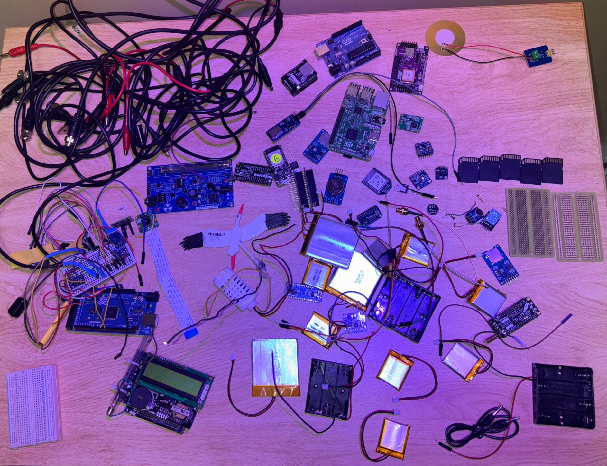
The core science instrument is a polarizing beamsplitter cube with dual silicon photodetectors and an astronomical filter, measuring the degree of linear polarization of scattered skylight as a function of altitude. A nine-axis IMU records payload orientation at each measurement so that in post-processing I can reconstruct the sky-referenced polarization angle, compensating for the 1 to 10 RPM spin on the tether. This is the same attitude-reconstruction approach used on satellite polarimeters[4].
But polarimetry is only one of the experiments. The full instrument manifest:
| Instrument | What it measures | |
|---|---|---|
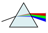 |
Polarimeter | Degree of linear polarization vs. altitude |
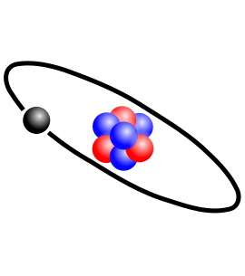 |
Geiger counter | Cosmic ray flux profile, Pfotzer maximum at ~18 km[5] |
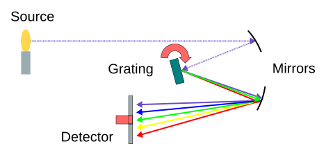 |
11-channel spectrometer | Ozone via Chappuis-band absorption[6] |
| UV radiometer | UVA and UVC irradiance (ozone confirmation) | |
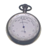 |
High-rate barometer | Pressure at 50 to 100 Hz for turbulence structure functions[7] |
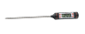 |
Thermocouple | External temperature to −200 °C |
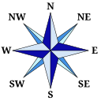 |
9-axis IMU | Attitude reconstruction for polarimetry |
| RGB colorimeter | Sky color vs. altitude | |
| Microphone | Acoustic environment and balloon burst timing | |
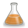 |
Ozone photometer | Narrowband ozone absorption channel |
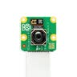 |
13 MP camera | Imagery every 10 seconds |
Four boards run the show. The Arduino Mega handles all 17 sensor channels and logs to SD. A Feather M0 with LoRa transmits GPS position over a custom 915 MHz telemetry link. A Raspberry Pi 2 takes 13 MP photos every 10 seconds. An Arduino Nano with its own battery pack acts as a backup logger. If the Mega crashes, I still get pressure and temperature.
Total mass: ~788 g in a cut-down styrofoam cooler (budget: 1200 g). The entire payload was built for under $500.
The telemetry link
Getting data back from 28 km is the second hardest problem after building the instruments. The payload transmits on 915 MHz LoRa at spreading factor SF12, which trades bandwidth for range. The transmitter antenna is an inverted quarter-wave ground plane: four copper radials at 45° with the radiator pointing straight down through the bottom of the cooler, so the radiation pattern favors the ground.
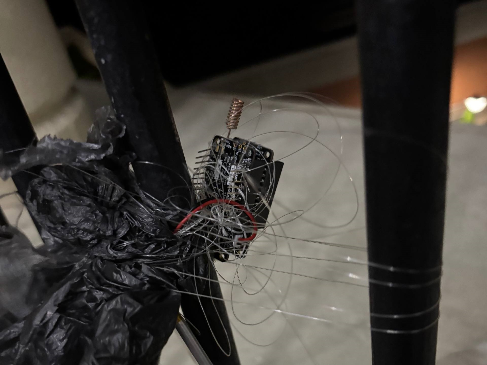
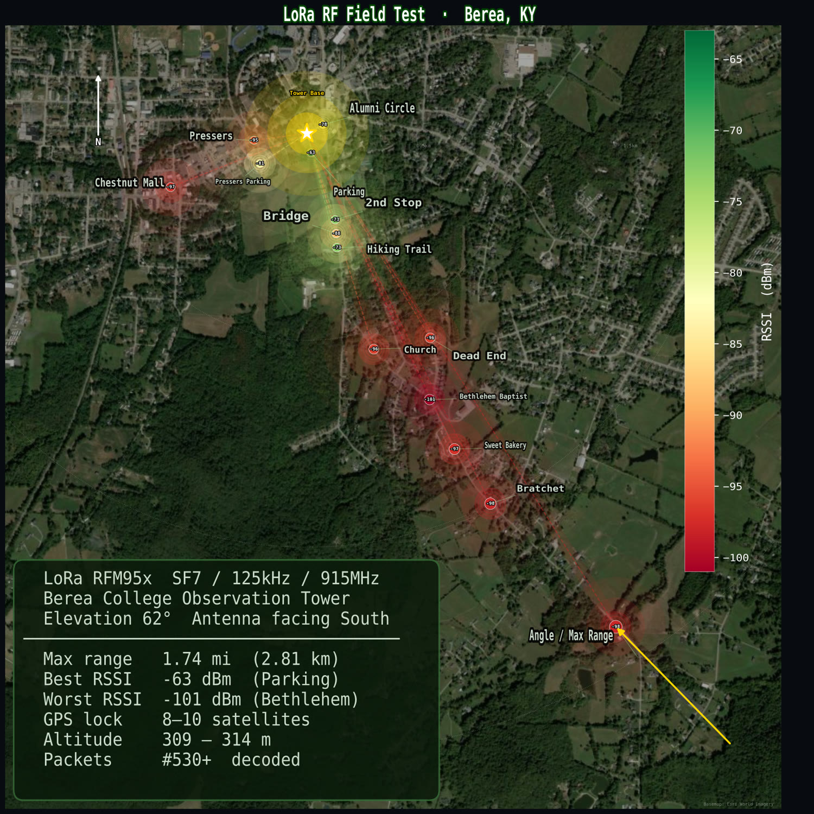
On the ground, I built a 7-element Yagi from a wooden dowel and copper wire. The combined improvement from SF12, the transmitter ground plane, and the Yagi totals about 35 dB over baseline. At altitude with line-of-sight, the link budget predicts over 200 km of range, more than enough for the 135 km predicted ground track.
The payload
Everything lives inside a cut-down styrofoam cooler. The polarimeter and ozone sensors view the sky through windows in the lid, sealed with clear packing tape. Two cameras look out the sides: the 13 MP camera aimed at the stork mascot with Earth's curvature behind it, and a 480p backup camera capturing the opposite direction. A thermocouple dangles 30 cm below the cooler to measure true air temperature. The UV sensor is mounted on top of the lid for direct sun exposure. Heating pads on the floor, controlled by a MOSFET thermostat, keep the batteries alive at −56°C.
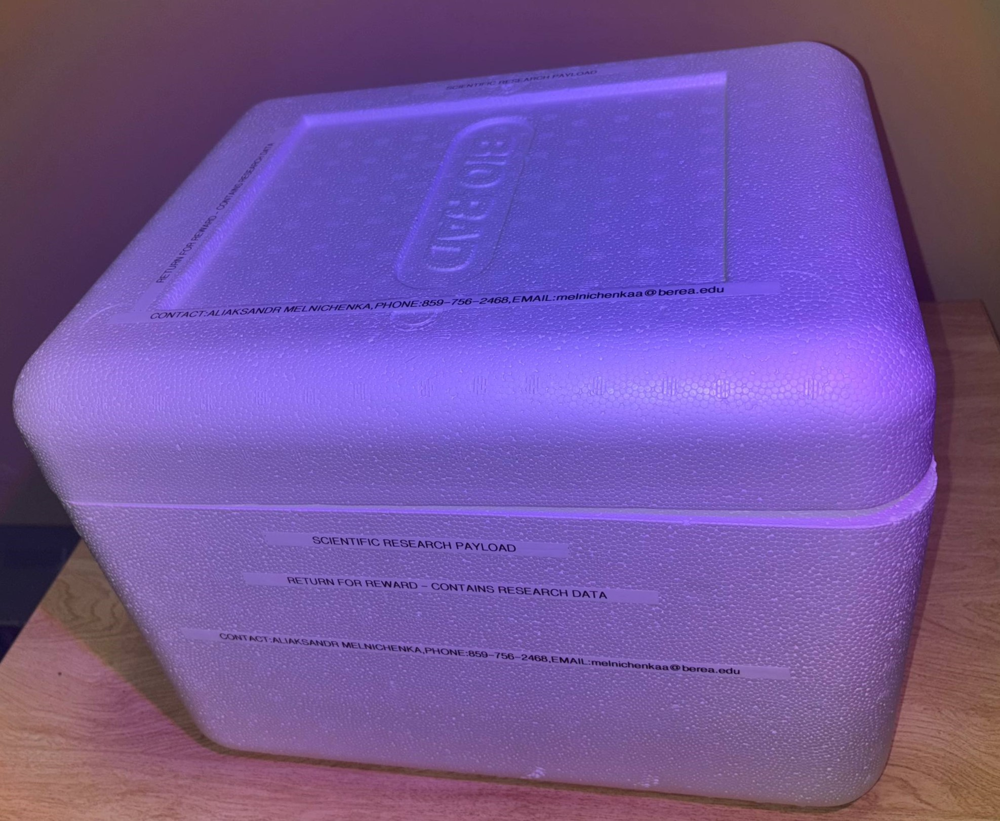
The stork
The mission is named BUSEL-1. Busiel is the Belarusian word for stork, the national bird of Belarus. A 3D-printed white stork rides on a boom extending from the side of the cooler, positioned so the 13 MP camera frames it in the center-right of the image with Earth's curvature and the black stratospheric sky behind it.
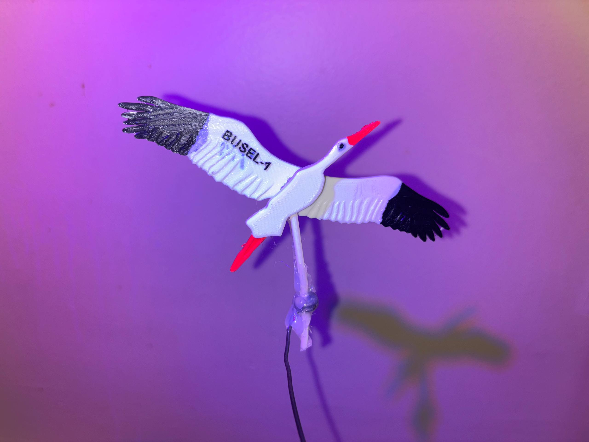
The test flight
Before committing to a full launch, the payload was suspended from a small tethered balloon to verify antenna radiation pattern, camera framing, and sensor telemetry. The test confirmed the LoRa link and camera angles. It also showed the payload spins at about 3 RPM on the tether, slow enough for the IMU-based attitude correction to work.
Science objectives
- Polarimetric altitude profile. Measure degree of linear polarization from surface (~70%) toward the single-scattering Rayleigh limit (~94%)[2] as optical depth decreases with altitude, with payload attitude reconstructed from a coflying 9-axis IMU. No student balloon has flown calibrated polarimetric optics to profile this transition[3], and the measurement directly extends the statistical framework in Melnichenka et al. (2026)[1].
- Cosmic ray flux. Record count rate vs. altitude with a Geiger-Müller tube and sealed calibration source for continuous in-flight gain verification, a technique standard in orbital radiation detectors[8] but never implemented on a student balloon. The Pfotzer maximum should appear near 18 km[5].
- Ozone layer. Detected two independent ways: Chappuis-band spectrophotometry[6] with an 11-channel spectral sensor and direct UVC measurement. The ozone concentration peak sits near 22 to 25 km.
- Atmospheric turbulence. Barometric pressure sampled at 50 to 100 Hz to compute structure functions along the ascent trajectory[7], connecting to the atmospheric cascade theory underlying the ApJ paper[1].
- Full atmospheric profile. Temperature (thermocouple rated to −200 °C), pressure, humidity, UV flux, acoustic environment, and sky color from ground to stratosphere and back, including the tropopause crossing and balloon burst event with millisecond timing.
Flight predictions
168-hour prediction window computed for the launch site. Each trajectory uses the same flight profile, ascending at 5.0 m/s to burst at 28,000 m and descending at 7.0 m/s, but drifts on different upper-atmosphere winds depending on launch hour. Predicted landing distances range from 111.5 to 193.0 km with a mean of 152.9 km, primarily across eastern Kentucky and western Virginia.
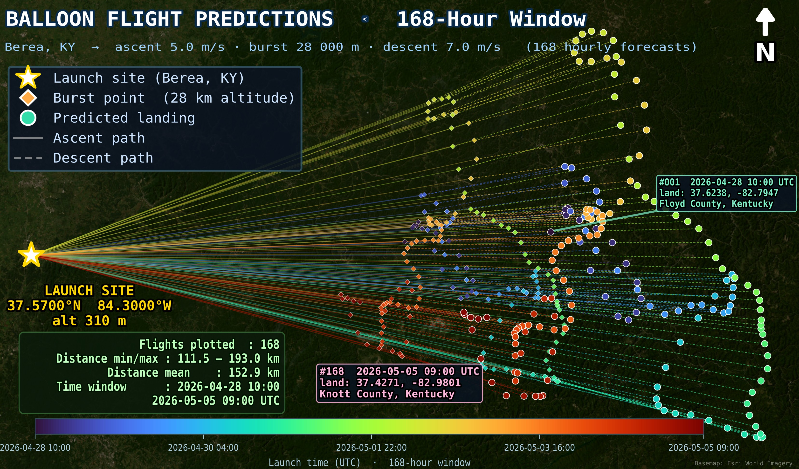
Launch plan
| Parameter | Value | |
|---|---|---|
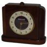 |
Launch | August 22, 2026 at 08:00 AM EDT |
| Site | Berea, KY 37.57°N, 84.30°W (310 m) | |
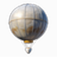 |
Balloon | 800 g Totex |
| Burst altitude | 28,000 m | |
| Ascent, descent | 5.0 m/s up, 7.0 m/s down | |
| Predicted landing | Floyd County, KY (~135 km east) | |
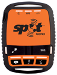 |
Recovery | SPOT Gen3 satellite tracker and AirTag backup |
Readiness
- All sensors tested and confirmed on I2C bus
- LoRa range test passed: 2.81 km at SF7
- Ground-plane antenna built and soldered
- SD card logging verified
- Cameras tested (13 MP and backup)
- SPOT Gen3 satellite tracker registered and active
- FAA notification filed
- Recovery plan: drive east along predicted ground track
Code and data
Flight software, sensor libraries, telemetry protocol, and post-flight analysis:
Looking ahead
BUSEL-1 is the first step in a three-stage program designed to push student-built science instruments from the upper atmosphere to interplanetary space.
Stage 1. BUSEL-I: Stratosphere
A high-altitude weather balloon carries 11 instruments to 28 km, validating hardware, telemetry, and recovery procedures in near-space conditions. This is the current mission, scheduled for August 22, 2026.
Stage 2. BUSEL-II: Near-Earth orbit
A CubeSat platform inherits the proven sensor suite from BUSEL-I and adds orbital capabilities: solar panels, attitude control, and a UHF downlink. The goal is long-duration polarimetric and radiation mapping from low Earth orbit.
Stage 3. BUSEL-III: Beyond the Solar System
A deep-space probe designed to explore trans-Neptunian objects and the outer boundary of the solar system. BUSEL-III would carry next-generation instruments informed by data from both earlier missions.
References
- A. Melnichenka, A. Lazarian, D. Pogosyan, "Recovering 3D Magnetic Turbulence from Single-Frequency Faraday Screens," The Astrophysical Journal, 2026. arXiv:2602.22204
- S. Chandrasekhar, Radiative Transfer, Dover Publications, 1960. Chapter on Rayleigh scattering and the theoretical maximum polarization degree for single scattering.
- L. Wiencke and D. Rosen, "High-altitude balloon polarimetry: a review of amateur and student platforms," Journal of Atmospheric and Solar-Terrestrial Physics, vol. 198, 2020. Survey of HAB science payloads; no calibrated polarimetric instruments identified on student platforms.
- J. V. Martins et al., "HARP CubeSat: A Multi-Angle Polarimeter for Aerosol and Cloud Characterization," Journal of Quantitative Spectroscopy and Radiative Transfer, vol. 273, 2021. Describes the attitude-reconstruction pipeline for orbital polarimetry that BUSEL-1 adapts to a balloon platform.
- G. Pfotzer, "Dreifachkoinzidenzen der Ultrastrahlung aus vertikaler Richtung in der Stratosphäre," Zeitschrift für Physik, vol. 102, pp. 23 to 58, 1936. Original observation of the cosmic ray intensity maximum at ~18 km.
- J. Chappuis, "Sur le spectre d'absorption de l'ozone," Comptes Rendus, vol. 91, pp. 884 to 886, 1880. Identification of the visible-wavelength ozone absorption bands used for spectrophotometric detection.
- A. N. Kolmogorov, "The local structure of turbulence in incompressible viscous fluid for very large Reynolds numbers," Doklady Akademii Nauk SSSR, vol. 30, pp. 299 to 303, 1941. Foundation for the structure function analysis applied to balloon pressure data.
- D. M. Sawyer and J. I. Vette, "AP-8 Trapped Proton Environment for Solar Maximum and Solar Minimum," NASA Technical Report NSSDC 76-06, 1976. Standard practice of co-flying calibration sources with radiation detectors on orbital platforms.